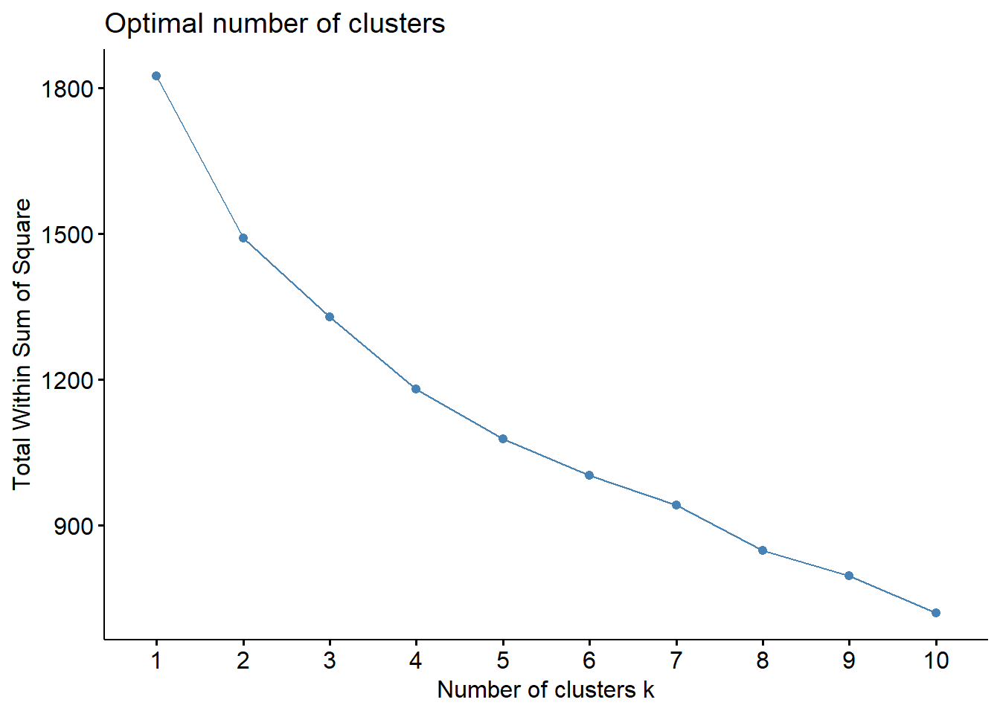

Chapter 3 First Clustering
3.1 Optimizing the Number of Clusters
The number of clusters that should be used for a data set can depend on many factors. From the jump, I anticipated using 8 clusters to mirror the NFL’s 8 divisions; however, to be thorough, I wanted to try to find an optimal number of clusters naively. To do this, I used the fviz_nbclust() function, which creates clusterings with 1 to a specified maximum number of centers and measures the total distance from points to the center of their cluster. In many cases, the total distance will quickly drop off as more clusters are added, until most of the major separation has been split into the clusters, at which point the distance will drop off more slowly. This point where the rate of drop off changes drastically is called the elbow.
I also set a seed so that the results of what I did would be reproducable for anyone who reads this later :) (you’re welcome)
set.seed(123)
fviz_nbclust(Scaled_stats, kmeans, method = "wss",k.max = 10, nboot = 100) When I looked at the graph, I did not see a clear elbow. It could be argued that 4 could be the elbow, but I am not convinced. I was planning to do 8 clusters regardless, but the lack of a clear elbow sold that decision.
3.2 Creating Eight Clusters
In order to create the 8 clusters I used the kmeans function and specified that I wanted 8 centers. I made the nstart value 100. The larger this number, the more times the algorithm will pick random starting points, so a larger number will produce the best results at the cost of time. With only 33 observations, I could make this number 10,000 and it would still run in less than 10 seconds; however, if you are clustering large datasets in the future, you will want to make this number smaller. Going up to 10,000 for the number of random starts would at best marginally improve the nstart of 100. Once the clusters are created, they need to be added to the data frame so that I can later sort by cluster.
cluster <- kmeans(Scaled_stats, centers = 8, nstart = 100)
Scaled_Stats_Analysis <- Scaled_stats
Scaled_Stats_Analysis$cluster <- cluster$cluster
Scaled_Stats_Analysis$Team <- All_stats$Team3.3 Cluster Reveal
for(i in 1:8){
teams <- Scaled_Stats_Analysis %>%
filter(cluster == i) %>%
select(c(Team,))
cat(paste("- `Cluster ", i, "` \n"))
for(j in teams){
cat(paste(" - `", j, "` \n"))
}
}Cluster 1New York GiantsMinnesota VikingsDetroit LionsSeattle SeahawksJacksonville Jaguars
Cluster 2Carolina PanthersLos Angeles RamsNew England PatriotsBaltimore RavensPittsburgh SteelersTennessee TitansDenver BroncosAvg Team
Cluster 3Washington CommandersNew Orleans SaintsNew York JetsCleveland Browns
Cluster 4Philadelphia EaglesDallas CowboysSan Francisco 49ersBuffalo BillsKansas City Chiefs
Cluster 5Chicago BearsAtlanta Falcons
Cluster 6Indianapolis ColtsHouston Texans
Cluster 7Green Bay PackersTampa Bay BuccaneersCincinnati BengalsLos Angeles Chargers
Cluster 8Arizona CardinalsMiami DolphinsLas Vegas Raiders
3.4 Interesting Findings
I want to discuss 3 interesting findings from these clusters. These findings are especially interesting to look at with the teams’ records to see how closely tied performing similarly in all of these categories corresponds to wins (the main metric fans are judging teams on).
3.4.1 Finding 1
Clusters 5 and 6 are both pairs of really bad teams. The Bears, Falcons, Colts, and Texans combined to go 17-29-2 with the tie coming in a game between the Colts and Texans. It is interesting to me that these teams formed two clusters and not one together with all of them. If I had used fewer clusters, like the elbow recommended that I do, these clusters may have combined to be only one.
3.4.2 Finding 2
The Vikings are in cluster 1with the Giants, Lions, Seahawks, and Jaguars, all of who won 9 games while the Vikings went 13-4. This is not surprising when you consider that the Vikings have the best record for any team ever with a negative point differential. All of these teams were slightly above average and I am a bit surprised that the “Avg Team” is not in this cluster
3.4.3 Finding 3
My favorite team, the Los Angeles Rams and my local team, the Carolina Panthers are both in cluster 2, alongside the “Avg Team”. This surprised me, as the Rams were hard to watch this year and I would have thought that they would be in a lesser cluster. The Panthers make more sense as a average team, but also looked below average when I watched their games. Of the other teams, the Patriots, Steelers, and Titans all make sense as average teams; however, it’s hard to imagine that the 10-7 Ravens and the 5-12 Broncos belong in the same cluster as one another, but that is what the data says.